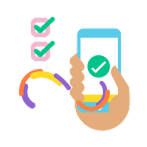

Guías de uso
Esta guía te ayudará a comprender cómo usar la Caja de Herramientas de manera sencilla y efectiva. No necesitas conocimientos técnicos previos para comenzar.
Introducción

Esta caja reúne herramientas que apoyan la toma de decisiones relacionadas con la accesibilidad en los productos, servicios y canales del banco.
Su objetivo es facilitar que la accesibilidad se incorpore de manera consistente en el trabajo diario, desde el diseño hasta la operación.
Cómo usar las herramientas de accesibilidad
¿Cómo está organizada la Caja de Herramientas?
Las herramientas están organizadas en tarjetas (cards) que presentan información clave como el nombre de la herramienta, el rol al que está dirigida, el propósito de uso y el tipo de recurso. Cada tarjeta representa una herramienta diferente.
Puedes explorar libremente o usar los filtros disponibles para encontrar más rápido lo que necesitas.
Uso de filtros
En la parte superior encontrarás filtros que te permiten refinar la búsqueda según tres criterios: quién va a usar la herramienta (rol), para qué la necesitas (propósito) y qué tipo de recurso buscas.
Pasos claros:
- Selecciona uno o varios filtros.
- La lista de herramientas se actualizará automáticamente.
- Si no encuentras resultados, puedes limpiar los filtros y volver a explorar.
Visualización de una herramienta
Al hacer clic sobre una tarjeta, se abrirá una ventana con la información completa de la herramienta seleccionada.
Qué encontrará el usuario:
- Descripción detallada
- Objetivo de la herramienta
- Recomendaciones de uso
- Recursos adicionales (si aplica)
- Archivos descargables o enlaces de apoyo
¿Cuándo usar una herramienta?
Usa una herramienta de accesibilidad cuando una decisión pueda afectar la forma en que una persona accede, entiende o utiliza un producto o servicio del banco:
- Creación o ajuste de contenidos
- Diseño o modificación de interfaces
- Desarrollo o cambio de funcionalidades
- Revisión de experiencias existentes
Antes de empezar
Asegúrate de tener claridad sobre:
- Qué decisión se va a tomar o revisar
- En qué punto del proceso se encuentra el trabajo
- Qué impacto puede tener en las personas usuarias
¿Cómo usar una herramienta en tu proyecto?
Cada herramienta está pensada para ser utilizada de forma práctica. Puedes aplicarla en sesiones de trabajo, talleres, procesos de aprendizaje o desarrollo de proyectos.
Recomendaciones:
- Lee primero la descripción completa.
- Identifica el objetivo de la herramienta.
- Adáptala a tu contexto y necesidades.
- No existe una única forma correcta de usarla.
Uso individual
Este modo aplica cuando la decisión depende de un rol específico o cuando se necesita una revisión puntual en solitario.
La herramienta ayuda a contrastar criterios, identificar riesgos y fortalecer la decisión antes de avanzar.
Uso conjunto
Este modo aplica cuando la decisión involucra a varios roles o áreas, o cuando es necesario alinear criterios.
En estos casos, la herramienta ayuda a ordenar la conversación y a dejar acuerdos claros.
Integración al trabajo diario
Los resultados deben incorporarse al flujo habitual de trabajo del banco, ya sea en diseño, desarrollo, validación o seguimiento.
Cuando una barrera no puede resolverse de inmediato, debe quedar identificada y gestionada de forma responsable.
Durante el uso
Cada herramienta indica cómo trabajar la información. Durante su aplicación:
- Sigue la secuencia propuesta y adáptala
- Registra los hallazgos y dudas relevantes
- Evita usarla solo como requisito a cumplir
Accesibilidad y facilidad de uso
La Caja de Herramientas ha sido diseñada teniendo en cuenta principios de accesibilidad para garantizar una experiencia inclusiva.
Buenas prácticas
Este modo aplica cuando la decisión involucra a varios roles o áreas, o cuando es necesario alinear criterios.
En estos casos, la herramienta ayuda a ordenar la conversación y a dejar acuerdos claros.
Revisión de resultados
Al finalizar, revisa los resultados obtenidos:
- En uso individual, confirma si la decisión es adecuada
- En uso conjunto, define próximos pasos y responsabilidades
Evolución de la caja y cierre
Esta caja de herramientas está en evolución constante. Las herramientas actuales y las que se incorporen seguirán este mismo marco de uso.
La accesibilidad es parte de la calidad de nuestros productos y servicios.